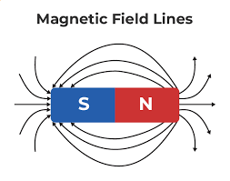

Understanding the sources of magnetic fields is fundamental to electromagnetism. Magnetic fields are created by moving electric charges, magnetic dipoles, and magnetic materials. Each source type produces characteristic field patterns and follows specific physical laws.
Classification of Magnetic Field Sources
üß≤ Primary Sources
Magnetic fields are created by three main types of sources:
Moving electric charges - Current-carrying wires and electron beams
Magnetic dipoles - Permanent magnets, current loops, and atomic dipoles
Magnetic materials - Ferromagnetic, paramagnetic, and diamagnetic substances

Diagram showing the three main categories of magnetic field sources.
Current as a Magnetic Field Source
⚡ Electric Current Sources
Electric current is the most fundamental source of magnetic fields.
Any moving electric charge creates a magnetic field. In wires, the collective motion of electrons (current) creates measurable magnetic fields.
Key Principle
Moving Charges: Any electric charge in motion creates a magnetic field
Current Density: Current per unit area (A/m²) for detailed calculations
Current: Total charge flow per unit time (A) for simple cases
Field Direction: Determined by right-hand rule for current-carrying wires
Electron flow in wire creating circular magnetic field lines around the conductor.
The magnetic field from a wire depends on your reference point. To better explain:
Example: Current and Magnetic Field Relationship
Problem: Explain how electric current creates a magnetic field.
Step 1: Moving Charges
Electrons move through the wire
Each moving electron creates a tiny magnetic field
Fields from all electrons add together
Step 2: Current Flow
Current is the rate of charge flow
Higher current = more moving charges
Stronger magnetic field with higher current
Step 3: Field Pattern
Field lines form circles around the wire
Field strength decreases with distance
Direction follows right-hand rule
Answer
Electric current creates magnetic fields through the motion of charged particles, with field strength proportional to current and field direction determined by the right-hand rule.
Magnetic Dipoles
üîó Magnetic Dipole Sources
Magnetic dipoles are the second major source of magnetic fields.
They consist of equal and opposite magnetic poles separated by a small distance.
Types of Magnetic Dipoles
Current loops: Circular or rectangular wire loops carrying current
Permanent magnets: Bar magnets, horseshoe magnets, and magnetic materials
Atomic dipoles: Electron spin and orbital motion within atoms
Molecular dipoles: Aligned atomic dipoles in magnetic materials
Example: Current Loop as Magnetic Dipole
Problem: Explain how a current loop acts as a magnetic dipole.
Step 1: Current Flow
Current flows around the loop
Creates magnetic field perpendicular to loop plane
Field direction follows right-hand rule
Step 2: Dipole Characteristics
North pole on one side of loop
South pole on opposite side
Magnetic moment proportional to current × area
Step 3: Field Pattern
Field lines emerge from north pole
Field lines enter south pole
Forms characteristic dipole pattern
Answer
A current loop creates a magnetic dipole with north and south poles, producing a characteristic dipole field pattern around the loop.
Magnetic Materials
üß≤ Material-Based Sources
Materials can enhance or modify magnetic fields through their atomic properties.
Different materials respond differently to magnetic fields based on their atomic structure.
Material Classification
Ferromagnetic: Strongly attracted to magnets (iron, nickel, cobalt)
Paramagnetic: Weakly attracted to magnets (aluminum, oxygen, platinum)
Diamagnetic: Weakly repelled by magnets (copper, water, bismuth)
Non-magnetic: No significant response to magnetic fields
Different materials responding to magnetic fields: ferromagnetic attraction, paramagnetic attraction, and diamagnetic repulsion.
Example: Ferromagnetic Materials
Problem: Explain why iron is strongly attracted to magnets.
Step 1: Atomic Structure
Iron atoms have unpaired electrons
Electron spins create atomic magnetic moments
Moments can align with external field
Step 2: Domain Formation
Groups of atoms form magnetic domains
Domains can align with external field
Creates strong magnetic response
Step 3: Field Enhancement
Aligned domains create additional field
Field is much stronger than applied field
Results in strong attraction to magnet
Answer
Iron is strongly attracted to magnets because its atomic magnetic moments can align with external fields, creating domains that enhance the magnetic field strength.
Field Patterns and Symmetry
üéØ Characteristic Field Patterns
Different sources create characteristic field patterns that can be identified and analyzed.
Understanding these patterns helps in identifying field sources and predicting field behavior.
Common Field Patterns
Circular fields: Around straight current-carrying wires
Uniform fields: Inside long solenoids and between parallel plates
Dipole fields: Around bar magnets and current loops
Toroidal fields: Inside toroidal coils and some transformers
Complex patterns: From multiple sources or irregular geometries
Example: Identifying Field Sources
Problem: Identify the source of a magnetic field based on its pattern.
Step 1: Analyze Field Lines
Circular pattern suggests current-carrying wire
Uniform pattern suggests solenoid or parallel plates
Dipole pattern suggests bar magnet or current loop
Step 2: Check Field Strength
Strong field near source
Decreasing strength with distance
Rate of decrease indicates source type
Step 3: Determine Direction
Right-hand rule for current sources
North to south for dipole sources
Consistent with field line direction
Answer
The field pattern reveals the source type: circular fields indicate current-carrying wires, uniform fields indicate solenoids, and dipole patterns indicate magnets or current loops.
Superposition Principle
➕ Superposition of Magnetic Fields
Magnetic fields from multiple sources add vectorially.
This principle allows us to calculate complex field configurations by adding contributions from individual sources.